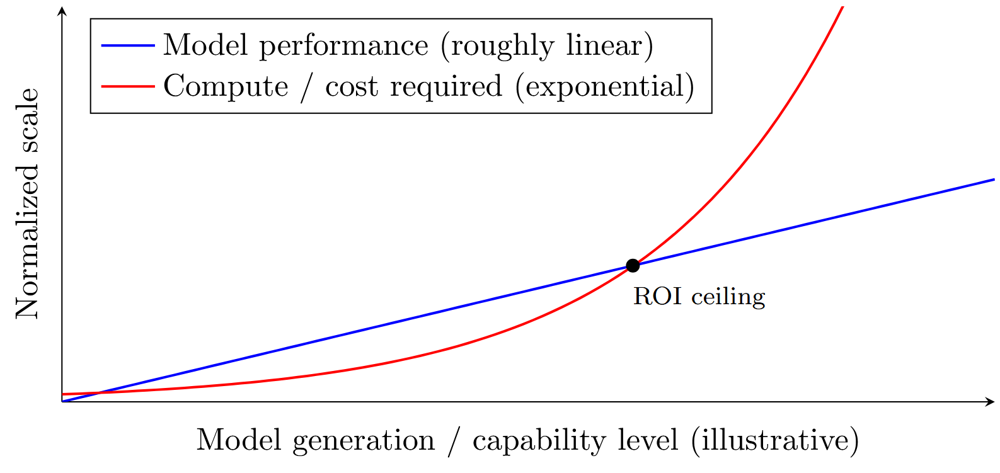

Sam, Dario, and Elon suddenly agree on slowing things down to save
humanity? What is happening? Are we witnessing a paradigm shift where
hyper-capitalism finally evolves into an ethically responsible
cooperation for the benefit of humankind as a whole? Okay, at least at
this point you should realize that this is probably not what's
happening. So, what is happening?
I don't work on LLM research directly, I am not even finished with
my PhD in Computer Science but I think about this stuff a lot (and
kinda have a degree in philosophy!!), and yet I have the strong urge
to share my thoughts with the world about this. A feeling new to me —
and believe me, I tried to fight it — but somehow I am strangely
confident that sharing these thoughts is the only way to sleep
tonight. I am even posting them on (anti)social media, which I
despise most of the time.
So here is my take:
Following up on the unfavorable implications of Richard Sutton's
"bitter lesson"[1] (more compute will
always yield better results), several smart researchers identified
multiple scaling laws that formally define this relationship and
describe the trade-off between actual progress in LLM research and
the cost required to reach the next level of performance,
astonishingly well.[2,3] These are not
foundational constants of nature, but they have worked well for
describing the development rush of the past years — much like
Moore's Law,[4] which somehow still
seems to hold. In short, scaling laws are the paradigm of the current
LLM era, which is precisely the reason why everyone is buying GPUs
and building data centers like crazy. However, a simplified reading
of these laws is that model performance increases linearly while the
required cost and compute increase exponentially. This means that,
regardless of the exact variables, there is a mathematical necessity:
at some point the return on investment (ROI, for the business folks)
of further development will turn negative. In other words, the next
marginal improvements of the newer model generation will come at
exploding costs, which will never be paid back in revenue.

Illustrative sketch (not empirical data): performance grows roughly linearly while required compute/cost grows exponentially, producing an inevitable ROI ceiling.
I ran a few thought experiments,[a]
ranging from best guesses of actual current numbers up to a scenario
in which every one of the 8.2 billion humans on this planet pays a
$150/month subscription to a single company. The year at which we
hit the turning point changes depending on the premises, but the
turning point is always there, and surprisingly close: roughly
2028/2029 for the best-guess scenarios, and somewhere in the
early-2030s for the extreme "everyone pays" scenario. Because of the
linear-versus-exponential relationship between lower model loss
(i.e., better model performance) and the cost of getting there, the
resulting time frame is surprisingly narrow. Thus, even throwing
insane amounts of money at this will only buy you a few extra
months.
So what does this mean?
For one, it could explain the odd shift in narrative among
hyper-capitalist CEOs, who slowly need to defend their expenses to
investors and are starting to worry about having to turn an actual
profit on their (still heavily subsidized) product.
It also means that we are close to the LLM ceiling in terms of
scaling laws. There is still plenty of room for improvement, but it
is no longer unlimited growth. LLMs are already powerful enough to
change our society at large, and they will have a huge impact on the
world as we know it. But they will also not create a
super-intelligence that destroys humankind overnight. Even if true
intelligence is a purely emergent phenomenon that can arise in any
sufficiently complex system or architecture, reaching it will not be
economically feasible using autoregressive transformers in the form
of LLMs. I know some of you will disagree here, and maybe LLMs will
end up being the tool that enables humans to fight each other to
extinction some other way. But as long as scaling laws hold, LLMs as
we know them will never suddenly spawn an independent entity with
power over our species. Sorry to burst your bubble, preppers! Maybe
this is at least good news for our planet — imagine the climate
impact if the data-center idiocracy never ended.
So what happens to the LLM products and the services built around
them? Usually, the next steps in the playbook are clear: after
market saturation comes enshittification (hello, ads, and paying to
raise the likelihood that an answer mentions your company). But I
think it will play out a bit differently this time. This bubble has
grown so fast that it is not yet too big to fail (as my wife put it:
the German state and its bureaucracy-heavy institutions would not
even notice if LLMs disappeared overnight). Enshittifying your
product only works once everyone is too dependent on it — or too
used to it — to switch. But this time the open-source community
(thank you, China, I guess?) is trailing so closely behind the
frontier models that many companies and users will simply switch to
open- and not-yet-shitty weights that cost a fraction of the frontier
models while still solving 90% of the tasks at hand. It might be
different for genuinely useful services, or for jobs that AI agents
can actually replace in the long run. But in general, this will make
it a lot harder to turn subscriptions and expensive tokens into
profit, acting as an extended arm of the scaling-law ceiling.
I also believe it won't take long (or it's already happening)
until many other people reach the same conclusion — especially smart
people with capital. So I think the LLM hype is finally slowing
down. The bubble will burst, or at least the capital will bleed out
slowly. This is not the end of the race toward super-intelligence.
The next chapter is probably coming fast (maybe Yann LeCun's JEPAs
will deliver[5]), but for LLMs, this is
the beginning of rationalization. Don't buy the hype. Instead, try to
play your part so that the positive aspects of this amazing new
technology outweigh the negative ones. This is also part of our
responsibility as researchers and as people with deeper insight into
the technical side of things — a responsibility I think is currently
underrepresented in AI research. But that's a topic for another
essay.
Thank you for reading this, if you made it this far. Please reach
out and let's discuss this together, as humans, using our own brains
only.
- Richard Sutton. The Bitter Lesson. 2019.
incompleteideas.net/IncIdeas/BitterLesson.html
- Gordon E. Moore. Cramming more components onto integrated circuits. Electronics, 38(8), 1965.
- Jared Kaplan, Sam McCandlish, Tom Henighan, Tom B. Brown, Benjamin Chess, Rewon Child, Scott Gray, Alec Radford, Jeffrey Wu, Dario Amodei. Scaling Laws for Neural Language Models.
arxiv.org/abs/2001.08361, 2020.
- Jordan Hoffmann, Sebastian Borgeaud, Arthur Mensch, Elena Buchatskaya, Trevor Cai, Eliza Rutherford, Diego de Las Casas, Lisa Anne Hendricks, Johannes Welbl, Aidan Clark, Tom Hennigan, Eric Noland, Katie Millican, George van den Driessche, Bogdan Damoc, Aurelia Guy, Simon Osindero, Karen Simonyan, Erich Elsen, Jack W. Rae, Oriol Vinyals, Laurent Sifre. Training Compute-Optimal Large Language Models.
arxiv.org/abs/2203.15556, 2022.
- Yann LeCun. A Path Towards Autonomous Machine Intelligence.
semanticscholar.org/CorpusID:251881108, 2022.